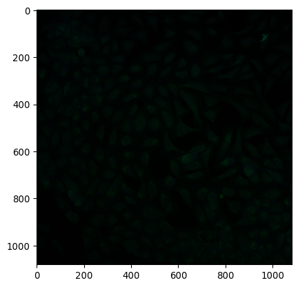
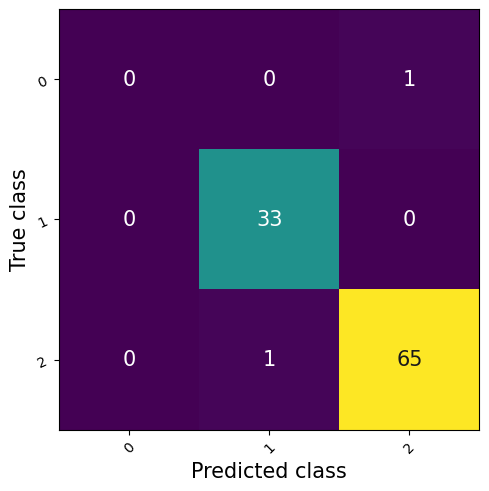

Categories: `class_names` = dict_values(['NONE/DMSO', 'CRISPR', 'ORF', 'COMPOUND'])
Training set size: 283 plates
Validation set size: 96 plates
Testing set size: 54 platescpg0016-jump datasetCategories: `class_names` = dict_values(['NONE/DMSO', 'CRISPR', 'ORF', 'COMPOUND'])
Training set size: 283 plates
Validation set size: 96 plates
Testing set size: 54 platestraining_ds = TiffS3Dataset(pert_plate_maps, wells_metadata, trn_plates, 16, 24, 9, 5, shuffle=True)
validation_ds = TiffS3Dataset(pert_plate_maps, wells_metadata, val_plates, 16, 24, 9, 5, shuffle=True)
testing_ds = TiffS3Dataset(pert_plate_maps, wells_metadata, tst_plates, 16, 24, 9, 5, shuffle=True)import matplotlib.pyplot as plt
sample_x, sample_y, sample_metadata = next(iter(training_ds))
print(sample_metadata)
print("Sample shape", sample_x.shape)
plt.imshow(np.moveaxis(sample_x, 0, -1)[..., :3])
print("Sample target", sample_y, class_names[sample_y]){'Plate_name': 'CP-CC9-R5-09', 'Source_name': 'source_13', 'Batch_name': '20221109_Run5', 'Plate_type': 'CRISPR', 'Plate_path': 'CP-CC9-R5-09', 'Well_position': 'O05'}
Sample shape (5, 1080, 1080)
Sample target 1 CRISPR
The DataLoader also manages the mini-batch collation and multi-thread loading of data for us.
from torch.utils.data.dataloader import DataLoader
batch_size = 10
training_dl = DataLoader(training_ds, batch_size=batch_size, num_workers=2, worker_init_fn=dataset_worker_init_fn)
validation_dl = DataLoader(validation_ds, batch_size=batch_size, num_workers=2, worker_init_fn=dataset_worker_init_fn)
testing_dl = DataLoader(testing_ds, batch_size=batch_size, num_workers=2, worker_init_fn=dataset_worker_init_fn)batch_x, batch_y, batch_metadata = next(iter(training_dl))
print("Batch inputs", batch_x.shape)
print("Batch targets", batch_y.shape)
pd.DataFrame(batch_metadata)Batch inputs torch.Size([10, 5, 1080, 1080])
Batch targets torch.Size([10])| Plate_name | Source_name | Batch_name | Plate_type | Plate_path | Well_position | |
|---|---|---|---|---|---|---|
| 0 | CP-CC9-R1-13 | source_13 | 20220914_Run1 | CRISPR | CP-CC9-R1-13 | J18 |
| 1 | BR00126707 | source_4 | 2021_08_23_Batch12 | ORF | BR00126707__2021-09-01T05_20_25-Measurement1 | E10 |
| 2 | BR00121555 | source_4 | 2021_05_31_Batch2 | ORF | BR00121555__2021-05-10T11_44_39-Measurement1 | A03 |
| 3 | CP-CC9-R4-27 | source_13 | 20221024_Run4 | CRISPR | CP-CC9-R4-27 | I19 |
| 4 | BR00126400 | source_4 | 2021_08_02_Batch10 | ORF | BR00126400__2021-09-08T12_41_55-Measurement3 | H11 |
| 5 | BR00125621 | source_4 | 2021_07_12_Batch8 | ORF | BR00125621__2021-07-17T23_43_22-Measurement1 | J01 |
| 6 | CP-CC9-R2-07 | source_13 | 20221009_Run2 | CRISPR | CP-CC9-R2-07 | P08 |
| 7 | BR00125621 | source_4 | 2021_07_12_Batch8 | ORF | BR00125621__2021-07-17T23_43_22-Measurement1 | K05 |
| 8 | BR00123518 | source_4 | 2021_05_17_Batch4 | ORF | BR00123518__2021-05-23T01_57_04-Measurement1 | I17 |
| 9 | CP-CC9-R3-27 | source_13 | 20221017_Run3 | CRISPR | CP-CC9-R3-27 | C08 |
Note
This approach will use a Multilayer Perceptron (MLP) model to classify the field-level morphological profiles into three categories: NONE/DMSO = 0, CRISPR = 1, and ORF = 2.
The model will be fitted using Adam optimizer, which objective is to reduce the Cross Entropy loss between the predicted and the ground-truth category of each field.
Note
We’ll start with a pre-trained MobileNet model for feature extraction since it is lightweight and fast.
In the literature, more complex models are used, such as Inception V3, DenseNet, or even Vision Transformers. However, these models require GPU acceleration to be efficiently applied.
MobileNetV3(
(features): Sequential(
(0): Conv2dNormActivation(
(0): Conv2d(3, 16, kernel_size=(3, 3), stride=(2, 2), padding=(1, 1), bias=False)
(1): BatchNorm2d(16, eps=0.001, momentum=0.01, affine=True, track_running_stats=True)
(2): Hardswish()
)
(1): InvertedResidual(
(block): Sequential(
(0): Conv2dNormActivation(
(0): Conv2d(16, 16, kernel_size=(3, 3), stride=(2, 2), padding=(1, 1), groups=16, bias=False)
(1): BatchNorm2d(16, eps=0.001, momentum=0.01, affine=True, track_running_stats=True)
(2): ReLU(inplace=True)
)
(1): SqueezeExcitation(
(avgpool): AdaptiveAvgPool2d(output_size=1)
(fc1): Conv2d(16, 8, kernel_size=(1, 1), stride=(1, 1))
(fc2): Conv2d(8, 16, kernel_size=(1, 1), stride=(1, 1))
(activation): ReLU()
(scale_activation): Hardsigmoid()
)
(2): Conv2dNormActivation(
(0): Conv2d(16, 16, kernel_size=(1, 1), stride=(1, 1), bias=False)
(1): BatchNorm2d(16, eps=0.001, momentum=0.01, affine=True, track_running_stats=True)
)
)
)
(2): InvertedResidual(
(block): Sequential(
(0): Conv2dNormActivation(
(0): Conv2d(16, 72, kernel_size=(1, 1), stride=(1, 1), bias=False)
(1): BatchNorm2d(72, eps=0.001, momentum=0.01, affine=True, track_running_stats=True)
(2): ReLU(inplace=True)
)
(1): Conv2dNormActivation(
(0): Conv2d(72, 72, kernel_size=(3, 3), stride=(2, 2), padding=(1, 1), groups=72, bias=False)
(1): BatchNorm2d(72, eps=0.001, momentum=0.01, affine=True, track_running_stats=True)
(2): ReLU(inplace=True)
)
(2): Conv2dNormActivation(
(0): Conv2d(72, 24, kernel_size=(1, 1), stride=(1, 1), bias=False)
(1): BatchNorm2d(24, eps=0.001, momentum=0.01, affine=True, track_running_stats=True)
)
)
)
(3): InvertedResidual(
(block): Sequential(
(0): Conv2dNormActivation(
(0): Conv2d(24, 88, kernel_size=(1, 1), stride=(1, 1), bias=False)
(1): BatchNorm2d(88, eps=0.001, momentum=0.01, affine=True, track_running_stats=True)
(2): ReLU(inplace=True)
)
(1): Conv2dNormActivation(
(0): Conv2d(88, 88, kernel_size=(3, 3), stride=(1, 1), padding=(1, 1), groups=88, bias=False)
(1): BatchNorm2d(88, eps=0.001, momentum=0.01, affine=True, track_running_stats=True)
(2): ReLU(inplace=True)
)
(2): Conv2dNormActivation(
(0): Conv2d(88, 24, kernel_size=(1, 1), stride=(1, 1), bias=False)
(1): BatchNorm2d(24, eps=0.001, momentum=0.01, affine=True, track_running_stats=True)
)
)
)
(4): InvertedResidual(
(block): Sequential(
(0): Conv2dNormActivation(
(0): Conv2d(24, 96, kernel_size=(1, 1), stride=(1, 1), bias=False)
(1): BatchNorm2d(96, eps=0.001, momentum=0.01, affine=True, track_running_stats=True)
(2): Hardswish()
)
(1): Conv2dNormActivation(
(0): Conv2d(96, 96, kernel_size=(5, 5), stride=(2, 2), padding=(2, 2), groups=96, bias=False)
(1): BatchNorm2d(96, eps=0.001, momentum=0.01, affine=True, track_running_stats=True)
(2): Hardswish()
)
(2): SqueezeExcitation(
(avgpool): AdaptiveAvgPool2d(output_size=1)
(fc1): Conv2d(96, 24, kernel_size=(1, 1), stride=(1, 1))
(fc2): Conv2d(24, 96, kernel_size=(1, 1), stride=(1, 1))
(activation): ReLU()
(scale_activation): Hardsigmoid()
)
(3): Conv2dNormActivation(
(0): Conv2d(96, 40, kernel_size=(1, 1), stride=(1, 1), bias=False)
(1): BatchNorm2d(40, eps=0.001, momentum=0.01, affine=True, track_running_stats=True)
)
)
)
(5): InvertedResidual(
(block): Sequential(
(0): Conv2dNormActivation(
(0): Conv2d(40, 240, kernel_size=(1, 1), stride=(1, 1), bias=False)
(1): BatchNorm2d(240, eps=0.001, momentum=0.01, affine=True, track_running_stats=True)
(2): Hardswish()
)
(1): Conv2dNormActivation(
(0): Conv2d(240, 240, kernel_size=(5, 5), stride=(1, 1), padding=(2, 2), groups=240, bias=False)
(1): BatchNorm2d(240, eps=0.001, momentum=0.01, affine=True, track_running_stats=True)
(2): Hardswish()
)
(2): SqueezeExcitation(
(avgpool): AdaptiveAvgPool2d(output_size=1)
(fc1): Conv2d(240, 64, kernel_size=(1, 1), stride=(1, 1))
(fc2): Conv2d(64, 240, kernel_size=(1, 1), stride=(1, 1))
(activation): ReLU()
(scale_activation): Hardsigmoid()
)
(3): Conv2dNormActivation(
(0): Conv2d(240, 40, kernel_size=(1, 1), stride=(1, 1), bias=False)
(1): BatchNorm2d(40, eps=0.001, momentum=0.01, affine=True, track_running_stats=True)
)
)
)
(6): InvertedResidual(
(block): Sequential(
(0): Conv2dNormActivation(
(0): Conv2d(40, 240, kernel_size=(1, 1), stride=(1, 1), bias=False)
(1): BatchNorm2d(240, eps=0.001, momentum=0.01, affine=True, track_running_stats=True)
(2): Hardswish()
)
(1): Conv2dNormActivation(
(0): Conv2d(240, 240, kernel_size=(5, 5), stride=(1, 1), padding=(2, 2), groups=240, bias=False)
(1): BatchNorm2d(240, eps=0.001, momentum=0.01, affine=True, track_running_stats=True)
(2): Hardswish()
)
(2): SqueezeExcitation(
(avgpool): AdaptiveAvgPool2d(output_size=1)
(fc1): Conv2d(240, 64, kernel_size=(1, 1), stride=(1, 1))
(fc2): Conv2d(64, 240, kernel_size=(1, 1), stride=(1, 1))
(activation): ReLU()
(scale_activation): Hardsigmoid()
)
(3): Conv2dNormActivation(
(0): Conv2d(240, 40, kernel_size=(1, 1), stride=(1, 1), bias=False)
(1): BatchNorm2d(40, eps=0.001, momentum=0.01, affine=True, track_running_stats=True)
)
)
)
(7): InvertedResidual(
(block): Sequential(
(0): Conv2dNormActivation(
(0): Conv2d(40, 120, kernel_size=(1, 1), stride=(1, 1), bias=False)
(1): BatchNorm2d(120, eps=0.001, momentum=0.01, affine=True, track_running_stats=True)
(2): Hardswish()
)
(1): Conv2dNormActivation(
(0): Conv2d(120, 120, kernel_size=(5, 5), stride=(1, 1), padding=(2, 2), groups=120, bias=False)
(1): BatchNorm2d(120, eps=0.001, momentum=0.01, affine=True, track_running_stats=True)
(2): Hardswish()
)
(2): SqueezeExcitation(
(avgpool): AdaptiveAvgPool2d(output_size=1)
(fc1): Conv2d(120, 32, kernel_size=(1, 1), stride=(1, 1))
(fc2): Conv2d(32, 120, kernel_size=(1, 1), stride=(1, 1))
(activation): ReLU()
(scale_activation): Hardsigmoid()
)
(3): Conv2dNormActivation(
(0): Conv2d(120, 48, kernel_size=(1, 1), stride=(1, 1), bias=False)
(1): BatchNorm2d(48, eps=0.001, momentum=0.01, affine=True, track_running_stats=True)
)
)
)
(8): InvertedResidual(
(block): Sequential(
(0): Conv2dNormActivation(
(0): Conv2d(48, 144, kernel_size=(1, 1), stride=(1, 1), bias=False)
(1): BatchNorm2d(144, eps=0.001, momentum=0.01, affine=True, track_running_stats=True)
(2): Hardswish()
)
(1): Conv2dNormActivation(
(0): Conv2d(144, 144, kernel_size=(5, 5), stride=(1, 1), padding=(2, 2), groups=144, bias=False)
(1): BatchNorm2d(144, eps=0.001, momentum=0.01, affine=True, track_running_stats=True)
(2): Hardswish()
)
(2): SqueezeExcitation(
(avgpool): AdaptiveAvgPool2d(output_size=1)
(fc1): Conv2d(144, 40, kernel_size=(1, 1), stride=(1, 1))
(fc2): Conv2d(40, 144, kernel_size=(1, 1), stride=(1, 1))
(activation): ReLU()
(scale_activation): Hardsigmoid()
)
(3): Conv2dNormActivation(
(0): Conv2d(144, 48, kernel_size=(1, 1), stride=(1, 1), bias=False)
(1): BatchNorm2d(48, eps=0.001, momentum=0.01, affine=True, track_running_stats=True)
)
)
)
(9): InvertedResidual(
(block): Sequential(
(0): Conv2dNormActivation(
(0): Conv2d(48, 288, kernel_size=(1, 1), stride=(1, 1), bias=False)
(1): BatchNorm2d(288, eps=0.001, momentum=0.01, affine=True, track_running_stats=True)
(2): Hardswish()
)
(1): Conv2dNormActivation(
(0): Conv2d(288, 288, kernel_size=(5, 5), stride=(2, 2), padding=(2, 2), groups=288, bias=False)
(1): BatchNorm2d(288, eps=0.001, momentum=0.01, affine=True, track_running_stats=True)
(2): Hardswish()
)
(2): SqueezeExcitation(
(avgpool): AdaptiveAvgPool2d(output_size=1)
(fc1): Conv2d(288, 72, kernel_size=(1, 1), stride=(1, 1))
(fc2): Conv2d(72, 288, kernel_size=(1, 1), stride=(1, 1))
(activation): ReLU()
(scale_activation): Hardsigmoid()
)
(3): Conv2dNormActivation(
(0): Conv2d(288, 96, kernel_size=(1, 1), stride=(1, 1), bias=False)
(1): BatchNorm2d(96, eps=0.001, momentum=0.01, affine=True, track_running_stats=True)
)
)
)
(10): InvertedResidual(
(block): Sequential(
(0): Conv2dNormActivation(
(0): Conv2d(96, 576, kernel_size=(1, 1), stride=(1, 1), bias=False)
(1): BatchNorm2d(576, eps=0.001, momentum=0.01, affine=True, track_running_stats=True)
(2): Hardswish()
)
(1): Conv2dNormActivation(
(0): Conv2d(576, 576, kernel_size=(5, 5), stride=(1, 1), padding=(2, 2), groups=576, bias=False)
(1): BatchNorm2d(576, eps=0.001, momentum=0.01, affine=True, track_running_stats=True)
(2): Hardswish()
)
(2): SqueezeExcitation(
(avgpool): AdaptiveAvgPool2d(output_size=1)
(fc1): Conv2d(576, 144, kernel_size=(1, 1), stride=(1, 1))
(fc2): Conv2d(144, 576, kernel_size=(1, 1), stride=(1, 1))
(activation): ReLU()
(scale_activation): Hardsigmoid()
)
(3): Conv2dNormActivation(
(0): Conv2d(576, 96, kernel_size=(1, 1), stride=(1, 1), bias=False)
(1): BatchNorm2d(96, eps=0.001, momentum=0.01, affine=True, track_running_stats=True)
)
)
)
(11): InvertedResidual(
(block): Sequential(
(0): Conv2dNormActivation(
(0): Conv2d(96, 576, kernel_size=(1, 1), stride=(1, 1), bias=False)
(1): BatchNorm2d(576, eps=0.001, momentum=0.01, affine=True, track_running_stats=True)
(2): Hardswish()
)
(1): Conv2dNormActivation(
(0): Conv2d(576, 576, kernel_size=(5, 5), stride=(1, 1), padding=(2, 2), groups=576, bias=False)
(1): BatchNorm2d(576, eps=0.001, momentum=0.01, affine=True, track_running_stats=True)
(2): Hardswish()
)
(2): SqueezeExcitation(
(avgpool): AdaptiveAvgPool2d(output_size=1)
(fc1): Conv2d(576, 144, kernel_size=(1, 1), stride=(1, 1))
(fc2): Conv2d(144, 576, kernel_size=(1, 1), stride=(1, 1))
(activation): ReLU()
(scale_activation): Hardsigmoid()
)
(3): Conv2dNormActivation(
(0): Conv2d(576, 96, kernel_size=(1, 1), stride=(1, 1), bias=False)
(1): BatchNorm2d(96, eps=0.001, momentum=0.01, affine=True, track_running_stats=True)
)
)
)
(12): Conv2dNormActivation(
(0): Conv2d(96, 576, kernel_size=(1, 1), stride=(1, 1), bias=False)
(1): BatchNorm2d(576, eps=0.001, momentum=0.01, affine=True, track_running_stats=True)
(2): Hardswish()
)
)
(avgpool): AdaptiveAvgPool2d(output_size=1)
(classifier): Identity()
)ImageClassification(
crop_size=[224]
resize_size=[256]
mean=[0.485, 0.456, 0.406]
std=[0.229, 0.224, 0.225]
interpolation=InterpolationMode.BILINEAR
)Note
Apply the model to each channel by separate.
def feature_extractor(batch_x):
b, c, h, w = batch_x.shape
x_t = model_transforms(torch.tile(batch_x.reshape(-1, 1, h, w), (1, 3, 1, 1)))
with torch.no_grad():
x_out = model(x_t)
fx = x_out.reshape(b, c, -1).sum(dim=1)
return fx
if torch.cuda.is_available():
batch_x = batch_x.cuda()
fx = feature_extractor(batch_x)
fx = fx.cpu()
fx.shapetorch.Size([10, 576])Note
The MobileNet model extracts \(576\) features per image, these will be the input features for the MLP classifer.
class PerturbationClassifier(torch.nn.Module):
def __init__(self, num_features, num_hidden_features, num_classes):
super(PerturbationClassifier, self).__init__()
self._classifier = torch.nn.Sequential(
torch.nn.BatchNorm1d(num_features=num_features),
torch.nn.Linear(in_features=num_features, out_features=num_hidden_features, bias=True),
torch.nn.Dropout(0.1),
torch.nn.ReLU(),
torch.nn.Linear(in_features=num_hidden_features, out_features=num_classes, bias=False)
)
def forward(self, input):
y_pred = self._classifier(input)
return y_pred
classifier = PerturbationClassifier(576, 128, 3)max_trn_batches = 100
from tqdm.auto import tqdm
from torchmetrics.classification import Accuracy
trn_n_dmso = 0
trn_n_crispr = 0
trn_n_orf = 0
# Set the model to training mode (this enables Dropout and batch normalization layers)
classifier.train()
trn_cls_loss_epoch = 0
trn_acc_metric = Accuracy(task="multiclass", num_classes=3)
# Training loop
trn_q = tqdm(total=max_trn_batches)
for trn_batch_i, (trn_batch_x, trn_batch_y, _) in enumerate(training_dl):
if trn_batch_i >= max_trn_batches:
break
optimizer.zero_grad()
if torch.cuda.is_available():
trn_batch_x = trn_batch_x.cuda()
trn_fx = feature_extractor(trn_batch_x)
trn_batch_y_pred = classifier(trn_fx).cpu()
trn_cls_loss = classifier_loss_fn(trn_batch_y_pred, trn_batch_y)
trn_cls_loss.backward()
optimizer.step()
trn_cls_loss_epoch += trn_cls_loss.item()
trn_acc_metric(trn_batch_y_pred.softmax(dim=1), trn_batch_y)
trn_n_dmso += sum(trn_batch_y == 0)
trn_n_crispr += sum(trn_batch_y == 1)
trn_n_orf += sum(trn_batch_y == 2)
trn_q.set_description(f"CE Loss: {trn_cls_loss.item():.04f}, Accuracy: {trn_acc_metric.compute()}, (Counts of DMSO: {trn_n_dmso}, CRISPR: {trn_n_crispr}, ORF: {trn_n_orf})")
trn_q.update(1)
trn_q.close()trn_n_total = trn_n_dmso + trn_n_crispr + trn_n_orf
trn_n_dmso / trn_n_total, trn_n_crispr / trn_n_total, trn_n_orf / trn_n_total(tensor(0.0110), tensor(0.3680), tensor(0.6210))max_val_batches = 20
val_n_dmso = 0
val_n_crispr = 0
val_n_orf = 0
# Set the model to training mode (this enables Dropout and batch normalization layers)
classifier.eval()
val_cls_loss_epoch = 0
val_acc_metric = Accuracy(task="multiclass", num_classes=3)
val_q = tqdm(total=max_val_batches)
for val_batch_i, (val_batch_x, val_batch_y, _) in enumerate(validation_dl):
if val_batch_i >= max_val_batches:
break
if torch.cuda.is_available():
val_batch_x = val_batch_x.cuda()
val_fx = feature_extractor(val_batch_x)
with torch.no_grad():
val_batch_y_pred = classifier(val_fx).cpu()
val_cls_loss = classifier_loss_fn(val_batch_y_pred, val_batch_y)
val_cls_loss_epoch += val_cls_loss.item()
val_acc_metric(val_batch_y_pred.softmax(dim=1), val_batch_y)
val_n_dmso += sum(val_batch_y == 0)
val_n_crispr += sum(val_batch_y == 1)
val_n_orf += sum(val_batch_y == 2)
val_q.set_description(f"[Validation] CE Loss: {val_cls_loss.item():.04f}, Accuracy: {val_acc_metric.compute()}, (Counts of DMSO: {val_n_dmso}, CRISPR: {val_n_crispr}, ORF: {val_n_orf})")
val_q.update(1)
val_q.close()Failed retrieving: s3://cellpainting-gallery/cpg0016-jump/source_10/images/2021_06_28_U2OS_48_hr_run9/images/Dest210628-162003/Dest210628-162003_P02_T0001F007L01A01Z01C01.tifFailed retrieving: s3://cellpainting-gallery/cpg0016-jump/source_10/images/2021_06_28_U2OS_48_hr_run9/images/Dest210628-162003/Dest210628-162003_F16_T0001F007L01A01Z01C01.tifval_n_total = val_n_dmso + val_n_crispr + val_n_orf
val_n_dmso / val_n_total, val_n_crispr / val_n_total, val_n_orf / val_n_total(tensor(0.0250), tensor(0.3750), tensor(0.6000))from torchmetrics.classification import ConfusionMatrix
max_tst_batches = 10
tst_n_dmso = 0
tst_n_crispr = 0
tst_n_orf = 0
# Set the model to training mode (this enables Dropout and batch normalization layers)
classifier.eval()
tst_cls_loss_epoch = 0
tst_acc_metric = Accuracy(task="multiclass", num_classes=3)
tst_confmat = ConfusionMatrix("multiclass", num_classes=3)
tst_q = tqdm(total=max_tst_batches)
for tst_batch_i, (tst_batch_x, tst_batch_y, _) in enumerate(validation_dl):
if tst_batch_i >= max_tst_batches:
break
if torch.cuda.is_available():
tst_batch_x = tst_batch_x.cuda()
tst_fx = feature_extractor(tst_batch_x)
with torch.no_grad():
tst_batch_y_pred = classifier(tst_fx).cpu()
tst_cls_loss = classifier_loss_fn(tst_batch_y_pred.cpu(), tst_batch_y)
tst_cls_loss_epoch += tst_cls_loss.item()
tst_acc_metric(tst_batch_y_pred.softmax(dim=1), tst_batch_y)
tst_batch_y_prob = tst_batch_y_pred.softmax(dim=1)
tst_confmat.update(tst_batch_y_prob, tst_batch_y)
tst_n_dmso += sum(tst_batch_y == 0)
tst_n_crispr += sum(tst_batch_y == 1)
tst_n_orf += sum(tst_batch_y == 2)
tst_q.set_description(f"[Testing] CE Loss: {tst_cls_loss.item():.04f}, Accuracy: {tst_acc_metric.compute()}, (Counts of DMSO: {tst_n_dmso}, CRISPR: {tst_n_crispr}, ORF: {tst_n_orf})")
tst_q.update(1)
tst_q.close()Failed retrieving: s3://cellpainting-gallery/cpg0016-jump/source_10/images/2021_06_28_U2OS_48_hr_run9/images/Dest210628-162003/Dest210628-162003_K19_T0001F008L01A01Z01C01.tiftst_n_total = tst_n_dmso + tst_n_crispr + tst_n_orf
tst_n_dmso / tst_n_total, tst_n_crispr / tst_n_total, tst_n_orf / tst_n_total(tensor(0.0100), tensor(0.3300), tensor(0.6600))(<Figure size 640x480 with 1 Axes>,
<Axes: xlabel='Predicted class', ylabel='True class'>)
Note
Because the model has learned to recognize CRISPR, ORF, and NONE/DMSO effects, it can be used to determine the behavior of any treatment based on their morphological profile.
compounds_ds = TiffS3Dataset(comp_plate_maps, wells_metadata, comp_plate_maps["Plate_name"].tolist(), 16, 24, 9, 5, shuffle=True)
compounds_dl = DataLoader(compounds_ds, batch_size=batch_size, num_workers=2, worker_init_fn=dataset_worker_init_fn)
batch_comp_x, batch_comp_y, batch_comp_meta = next(iter(compounds_dl))
if torch.cuda.is_available():
batch_comp_x = batch_comp_x.cuda()
comp_fx = feature_extractor(batch_comp_x)
with torch.no_grad():
comp_batch_y_pred = classifier(comp_fx).cpu()
comp_batch_y_pred.argmax(dim=1)Failed retrieving: s3://cellpainting-gallery/cpg0016-jump/source_2/images/20210719_Batch_6/images/1086293829/1086293829_C19_T0001F007L01A01Z01C01.tif
Failed retrieving: s3://cellpainting-gallery/cpg0016-jump/source_10/images/2021_08_12_U2OS_48_hr_run15/images/Dest210803-160041/Dest210803-160041_D09_T0001F007L01A01Z01C01.tif
Failed retrieving: s3://cellpainting-gallery/cpg0016-jump/source_2/images/20210823_Batch_10/images/1086291931/1086291931_A08_T0001F007L01A01Z01C01.tiftensor([2, 2, 1, 1, 2, 2, 1, 1, 1, 1])def compound_query(well_position):
return wells_metadata.query(f"well_position == '{well_position}' & Plate_type=='COMPOUND'")["broad_sample"].to_numpy()[0]
batch_comp_df = pd.DataFrame(batch_comp_meta)
batch_comp_df["Predicted_class"] = comp_batch_y_pred.argmax(dim=1)
batch_comp_df["Predicted_class"] = batch_comp_df["Predicted_class"].map(class_names)
batch_comp_df["Broad_compound"] = batch_comp_df["Well_position"].map(compound_query)
batch_comp_df| Plate_name | Source_name | Batch_name | Plate_type | Plate_path | Well_position | Predicted_class | Broad_compound | |
|---|---|---|---|---|---|---|---|---|
| 0 | EC000026 | source_11 | Batch1 | COMPOUND | EC000026__2021-05-29T23_51_34-Measurement1 | F22 | ORF | BRD-K41599323-001-02-3 |
| 1 | EC000127 | source_11 | Batch4 | COMPOUND | EC000127__2021-09-24T00_36_37-Measurement2 | J09 | ORF | BRD-K19477839-001-07-6 |
| 2 | PEC00001843 | source_15 | 2021_12_17_Batch1 | COMPOUND | PEC00001843__2021-12-17T07_31_02-Measurement1 | B02 | CRISPR | BRD-K58049875-001-03-9 |
| 3 | 110000296689 | source_6 | p210914CPU2OS48hw384exp027JUMP | COMPOUND | 110000296689 | I17 | CRISPR | BRD-K38852836-001-04-9 |
| 4 | 1053601770 | source_2 | 20210607_Batch_2 | COMPOUND | 1053601770 | O05 | ORF | BRD-K19227686-001-18-6 |
| 5 | J12459d | source_3 | CP_26_all_Phenix1 | COMPOUND | J12459d__2021-09-25T13_01_11-Measurement1 | B23 | ORF | BRD-K87158025-003-08-7 |
| 6 | C13443dW | source_3 | CP_25_all_Phenix1 | COMPOUND | C13443dW__2021-09-18T02_33_56-Measurement1 | A05 | CRISPR | BRD-K48278478-001-01-2 |
| 7 | P06_ADMJUM026 | source_5 | JUMPCPE-20210902-Run26_20210903_010341 | COMPOUND | P06_ADMJUM026 | M14 | CRISPR | BRD-K63430059-001-16-4 |
| 8 | Dest210531-152634 | source_10 | 2021_05_31_U2OS_48_hr_run1 | COMPOUND | Dest210531-152634 | K21 | CRISPR | BRD-K20986415-001-02-6 |
| 9 | 110000294899 | source_6 | p210831CPU2OS48hw384exp024JUMP | COMPOUND | 110000294899 | L14 | CRISPR | BRD-K97010173-001-04-1 |